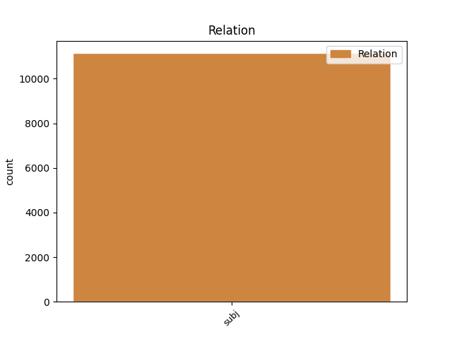
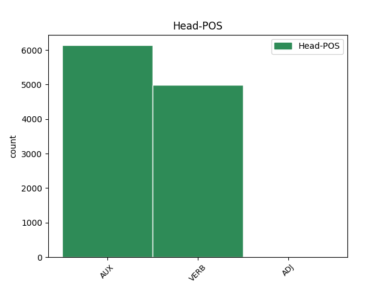
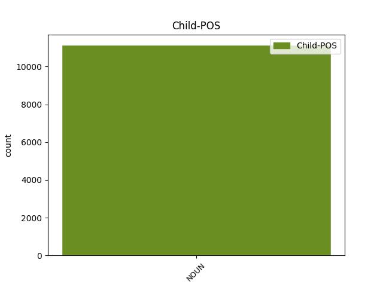

Distribution of features within this leaf



Agreement Rules sorted by frequency.
- When the dependent token is the subject(subj) of the head token, and the dependent token is NOUN.
1 El _ _ _ _ 0 _ _ _
2 sanedrí sanedrí NOUN NOUN Gender=Masc|Number=Sing 3 subj _ _
3 estaria estar AUX AUX Mood=Cnd|Number=Sing|Person=3|VerbForm=Fin 0 _ _ _
4 format _ _ _ _ 0 _ _ _
5 per _ _ _ _ 0 _ _ _
6 Adolfo _ _ _ _ 0 _ _ _
7 Suárez _ _ _ _ 0 _ _ _
8 , _ _ _ _ 0 _ _ _
9 Leopoldo _ _ _ _ 0 _ _ _
10 Calvo-Sotelo _ _ _ _ 0 _ _ _
11 i _ _ _ _ 0 _ _ _
12 Felipe _ _ _ _ 0 _ _ _
13 González _ _ _ _ 0 _ _ _
14 . _ _ _ _ 0 _ _ _
Disagree Examples:
1 Una _ _ _ _ 0 _ _ _
2 setantena setantena NOUN NOUN Gender=Fem|Number=Sing 22 subj _ _
3 de _ _ _ _ 0 _ _ _
4 treballadors _ _ _ _ 0 _ _ _
5 de _ _ _ _ 0 _ _ _
6 Fomento _ _ _ _ 0 _ _ _
7 de _ _ _ _ 0 _ _ _
8 Construcciones _ _ _ _ 0 _ _ _
9 y _ _ _ _ 0 _ _ _
10 Contratas _ _ _ _ 0 _ _ _
11 a _ _ _ _ 0 _ _ _
12 Manresa _ _ _ _ 0 _ _ _
13 , _ _ _ _ 0 _ _ _
14 gairebé _ _ _ _ 0 _ _ _
15 la _ _ _ _ 0 _ _ _
16 totalitat _ _ _ _ 0 _ _ _
17 de _ _ _ _ 0 _ _ _
18 la _ _ _ _ 0 _ _ _
19 plantilla _ _ _ _ 0 _ _ _
20 , _ _ _ _ 0 _ _ _
21 s' _ _ _ _ 0 _ _ _
22 han haver AUX AUX Mood=Ind|Number=Plur|Person=3|Tense=Pres|VerbForm=Fin 0 _ _ _
23 manifestat _ _ _ _ 0 _ _ _
24 aquest _ _ _ _ 0 _ _ _
25 migdia _ _ _ _ 0 _ _ _
26 pels _ _ _ _ 0 _ _ _
27 carrers _ _ _ _ 0 _ _ _
28 de _ _ _ _ 0 _ _ _
29 la _ _ _ _ 0 _ _ _
30 ciutat _ _ _ _ 0 _ _ _
31 . _ _ _ _ 0 _ _ _
1 El _ _ _ _ 0 _ _ _
2 conseller conseller NOUN NOUN Gender=Masc|Number=Sing 37 subj _ _
3 de _ _ _ _ 0 _ _ _
4 Política _ _ _ _ 0 _ _ _
5 Territorial _ _ _ _ 0 _ _ _
6 i _ _ _ _ 0 _ _ _
7 Obres _ _ _ _ 0 _ _ _
8 Públiques _ _ _ _ 0 _ _ _
9 de _ _ _ _ 0 _ _ _
10 la _ _ _ _ 0 _ _ _
11 Generalitat _ _ _ _ 0 _ _ _
12 , _ _ _ _ 0 _ _ _
13 Pere _ _ _ _ 0 _ _ _
14 Macias _ _ _ _ 0 _ _ _
15 , _ _ _ _ 0 _ _ _
16 l' _ _ _ _ 0 _ _ _
17 abat _ _ _ _ 0 _ _ _
18 de _ _ _ _ 0 _ _ _
19 Montserrat _ _ _ _ 0 _ _ _
20 , _ _ _ _ 0 _ _ _
21 Josep _ _ _ _ 0 _ _ _
22 Maria _ _ _ _ 0 _ _ _
23 Soler _ _ _ _ 0 _ _ _
24 , _ _ _ _ 0 _ _ _
25 i _ _ _ _ 0 _ _ _
26 el _ _ _ _ 0 _ _ _
27 president _ _ _ _ 0 _ _ _
28 de _ _ _ _ 0 _ _ _
29 Ferrocarrils _ _ _ _ 0 _ _ _
30 de _ _ _ _ 0 _ _ _
31 la _ _ _ _ 0 _ _ _
32 Generalitat _ _ _ _ 0 _ _ _
33 , _ _ _ _ 0 _ _ _
34 Antoni _ _ _ _ 0 _ _ _
35 Herce _ _ _ _ 0 _ _ _
36 , _ _ _ _ 0 _ _ _
37 han haver AUX AUX Mood=Ind|Number=Plur|Person=3|Tense=Pres|VerbForm=Fin 0 _ _ _
38 inaugurat _ _ _ _ 0 _ _ _
39 avui _ _ _ _ 0 _ _ _
40 la _ _ _ _ 0 _ _ _
41 remodelació _ _ _ _ 0 _ _ _
42 del _ _ _ _ 0 _ _ _
43 funicular _ _ _ _ 0 _ _ _
44 de _ _ _ _ 0 _ _ _
45 la _ _ _ _ 0 _ _ _
46 Santa _ _ _ _ 0 _ _ _
47 Cova _ _ _ _ 0 _ _ _
48 de _ _ _ _ 0 _ _ _
49 Montserrat _ _ _ _ 0 _ _ _
50 , _ _ _ _ 0 _ _ _
51 que _ _ _ _ 0 _ _ _
52 va _ _ _ _ 0 _ _ _
53 quedar _ _ _ _ 0 _ _ _
54 totalment _ _ _ _ 0 _ _ _
55 inutilitzat _ _ _ _ 0 _ _ _
56 a _ _ _ _ 0 _ _ _
57 causa _ _ _ _ 0 _ _ _
58 dels _ _ _ _ 0 _ _ _
59 aiguats _ _ _ _ 0 _ _ _
60 de _ _ _ _ 0 _ _ _
61 fa _ _ _ _ 0 _ _ _
62 un _ _ _ _ 0 _ _ _
63 any _ _ _ _ 0 _ _ _
64 . _ _ _ _ 0 _ _ _
1 L' _ _ _ _ 0 _ _ _
2 empresa empresa NOUN NOUN Gender=Fem|Number=Sing 25 subj _ _
3 promotora _ _ _ _ 0 _ _ _
4 Garraf _ _ _ _ 0 _ _ _
5 Mediterrània _ _ _ _ 0 _ _ _
6 SA _ _ _ _ 0 _ _ _
7 i _ _ _ _ 0 _ _ _
8 Pirelli _ _ _ _ 0 _ _ _
9 Cables _ _ _ _ 0 _ _ _
10 y _ _ _ _ 0 _ _ _
11 Sistemas _ _ _ _ 0 _ _ _
12 SA _ _ _ _ 0 _ _ _
13 , _ _ _ _ 0 _ _ _
14 en _ _ _ _ 0 _ _ _
15 col·laboració _ _ _ _ 0 _ _ _
16 amb _ _ _ _ 0 _ _ _
17 l' _ _ _ _ 0 _ _ _
18 Ajuntament _ _ _ _ 0 _ _ _
19 de _ _ _ _ 0 _ _ _
20 Vilanova _ _ _ _ 0 _ _ _
21 i _ _ _ _ 0 _ _ _
22 la _ _ _ _ 0 _ _ _
23 Geltrú _ _ _ _ 0 _ _ _
24 , _ _ _ _ 0 _ _ _
25 han haver AUX AUX Mood=Ind|Number=Plur|Person=3|Tense=Pres|VerbForm=Fin 0 _ _ _
26 convocat _ _ _ _ 0 _ _ _
27 el _ _ _ _ 0 _ _ _
28 concurs _ _ _ _ 0 _ _ _
29 d' _ _ _ _ 0 _ _ _
30 idees _ _ _ _ 0 _ _ _
31 de _ _ _ _ 0 _ _ _
32 l' _ _ _ _ 0 _ _ _
33 anomenat _ _ _ _ 0 _ _ _
34 ' _ _ _ _ 0 _ _ _
35 Espai _ _ _ _ 0 _ _ _
36 Pirelli _ _ _ _ 0 _ _ _
37 ' _ _ _ _ 0 _ _ _
38 per _ _ _ _ 0 _ _ _
39 seleccionar _ _ _ _ 0 _ _ _
40 , _ _ _ _ 0 _ _ _
41 a _ _ _ _ 0 _ _ _
42 partir _ _ _ _ 0 _ _ _
43 del _ _ _ _ 0 _ _ _
44 dia _ _ _ _ 0 _ _ _
45 8 _ _ _ _ 0 _ _ _
46 de _ _ _ _ 0 _ _ _
47 juny _ _ _ _ 0 _ _ _
48 i _ _ _ _ 0 _ _ _
49 durant _ _ _ _ 0 _ _ _
50 els _ _ _ _ 0 _ _ _
51 propers _ _ _ _ 0 _ _ _
52 mesos _ _ _ _ 0 _ _ _
53 , _ _ _ _ 0 _ _ _
54 les _ _ _ _ 0 _ _ _
55 propostes _ _ _ _ 0 _ _ _
56 urbanístiques _ _ _ _ 0 _ _ _
57 , _ _ _ _ 0 _ _ _
58 arquitectòniques _ _ _ _ 0 _ _ _
59 i _ _ _ _ 0 _ _ _
60 mediambientals _ _ _ _ 0 _ _ _
61 que _ _ _ _ 0 _ _ _
62 serviran _ _ _ _ 0 _ _ _
63 de _ _ _ _ 0 _ _ _
64 base _ _ _ _ 0 _ _ _
65 per _ _ _ _ 0 _ _ _
66 a _ _ _ _ 0 _ _ _
67 la _ _ _ _ 0 _ _ _
68 redacció _ _ _ _ 0 _ _ _
69 del _ _ _ _ 0 _ _ _
70 futur _ _ _ _ 0 _ _ _
71 Pla _ _ _ _ 0 _ _ _
72 Especial _ _ _ _ 0 _ _ _
73 de _ _ _ _ 0 _ _ _
74 Reforma _ _ _ _ 0 _ _ _
75 Interior _ _ _ _ 0 _ _ _
76 ( _ _ _ _ 0 _ _ _
77 PERI _ _ _ _ 0 _ _ _
78 ) _ _ _ _ 0 _ _ _
79 dels _ _ _ _ 0 _ _ _
80 terrenys _ _ _ _ 0 _ _ _
81 que _ _ _ _ 0 _ _ _
82 ara _ _ _ _ 0 _ _ _
83 ocupa _ _ _ _ 0 _ _ _
84 Pirelli _ _ _ _ 0 _ _ _
85 a _ _ _ _ 0 _ _ _
86 Vilanova _ _ _ _ 0 _ _ _
87 . _ _ _ _ 0 _ _ _
1 El _ _ _ _ 0 _ _ _
2 president president NOUN NOUN Gender=Masc|Number=Sing 29 subj _ _
3 de _ _ _ _ 0 _ _ _
4 la _ _ _ _ 0 _ _ _
5 Borsa _ _ _ _ 0 _ _ _
6 de _ _ _ _ 0 _ _ _
7 Barcelona _ _ _ _ 0 _ _ _
8 , _ _ _ _ 0 _ _ _
9 Joan _ _ _ _ 0 _ _ _
10 Hortalà _ _ _ _ 0 _ _ _
11 , _ _ _ _ 0 _ _ _
12 i _ _ _ _ 0 _ _ _
13 la _ _ _ _ 0 _ _ _
14 seva _ _ _ _ 0 _ _ _
15 exsecretària _ _ _ _ 0 _ _ _
16 i _ _ _ _ 0 _ _ _
17 querellant _ _ _ _ 0 _ _ _
18 per _ _ _ _ 0 _ _ _
19 un _ _ _ _ 0 _ _ _
20 presumpte _ _ _ _ 0 _ _ _
21 delicte _ _ _ _ 0 _ _ _
22 d' _ _ _ _ 0 _ _ _
23 assetjament _ _ _ _ 0 _ _ _
24 sexual _ _ _ _ 0 _ _ _
25 , _ _ _ _ 0 _ _ _
26 Olga _ _ _ _ 0 _ _ _
27 Ros _ _ _ _ 0 _ _ _
28 , _ _ _ _ 0 _ _ _
29 han haver AUX AUX Mood=Ind|Number=Plur|Person=3|Tense=Pres|VerbForm=Fin 0 _ _ _
30 arribat _ _ _ _ 0 _ _ _
31 a _ _ _ _ 0 _ _ _
32 un _ _ _ _ 0 _ _ _
33 acord _ _ _ _ 0 _ _ _
34 en _ _ _ _ 0 _ _ _
35 el _ _ _ _ 0 _ _ _
36 litigi _ _ _ _ 0 _ _ _
37 per _ _ _ _ 0 _ _ _
38 l' _ _ _ _ 0 _ _ _
39 acomiadament _ _ _ _ 0 _ _ _
40 que _ _ _ _ 0 _ _ _
41 tenien _ _ _ _ 0 _ _ _
42 pendent _ _ _ _ 0 _ _ _
43 de _ _ _ _ 0 _ _ _
44 resolució _ _ _ _ 0 _ _ _
45 . _ _ _ _ 0 _ _ _
1 En _ _ _ _ 0 _ _ _
2 aquest _ _ _ _ 0 _ _ _
3 sentit _ _ _ _ 0 _ _ _
4 , _ _ _ _ 0 _ _ _
5 els _ _ _ _ 0 _ _ _
6 increments increment NOUN NOUN Gender=Masc|Number=Plur 27 subj _ _
7 de _ _ _ _ 0 _ _ _
8 població _ _ _ _ 0 _ _ _
9 previstos _ _ _ _ 0 _ _ _
10 per _ _ _ _ 0 _ _ _
11 als _ _ _ _ 0 _ _ _
12 anys _ _ _ _ 0 _ _ _
13 2002-2003 _ _ _ _ 0 _ _ _
14 , _ _ _ _ 0 _ _ _
15 calculats _ _ _ _ 0 _ _ _
16 a _ _ _ _ 0 _ _ _
17 partir _ _ _ _ 0 _ _ _
18 de _ _ _ _ 0 _ _ _
19 la _ _ _ _ 0 _ _ _
20 població _ _ _ _ 0 _ _ _
21 actual _ _ _ _ 0 _ _ _
22 , _ _ _ _ 0 _ _ _
23 de _ _ _ _ 0 _ _ _
24 20.700 _ _ _ _ 0 _ _ _
25 habitants _ _ _ _ 0 _ _ _
26 , _ _ _ _ 0 _ _ _
27 dóna donar VERB VERB Mood=Ind|Number=Sing|Person=3|Tense=Pres|VerbForm=Fin 0 _ _ _
28 per _ _ _ _ 0 _ _ _
29 aquest _ _ _ _ 0 _ _ _
30 període _ _ _ _ 0 _ _ _
31 un _ _ _ _ 0 _ _ _
32 mínim _ _ _ _ 0 _ _ _
33 de _ _ _ _ 0 _ _ _
34 23.460 _ _ _ _ 0 _ _ _
35 habitants _ _ _ _ 0 _ _ _
36 tot _ _ _ _ 0 _ _ _
37 i _ _ _ _ 0 _ _ _
38 que _ _ _ _ 0 _ _ _
39 les _ _ _ _ 0 _ _ _
40 previsions _ _ _ _ 0 _ _ _
41 de _ _ _ _ 0 _ _ _
42 creixement _ _ _ _ 0 _ _ _
43 considerat _ _ _ _ 0 _ _ _
44 en _ _ _ _ 0 _ _ _
45 el _ _ _ _ 0 _ _ _
46 Pla _ _ _ _ 0 _ _ _
47 General _ _ _ _ 0 _ _ _
48 d' _ _ _ _ 0 _ _ _
49 Ordenació _ _ _ _ 0 _ _ _
50 Municipal _ _ _ _ 0 _ _ _
51 podrien _ _ _ _ 0 _ _ _
52 assolir _ _ _ _ 0 _ _ _
53 el _ _ _ _ 0 _ _ _
54 2001 _ _ _ _ 0 _ _ _
55 una _ _ _ _ 0 _ _ _
56 població _ _ _ _ 0 _ _ _
57 d' _ _ _ _ 0 _ _ _
58 entre _ _ _ _ 0 _ _ _
59 26.000 _ _ _ _ 0 _ _ _
60 i _ _ _ _ 0 _ _ _
61 28.000 _ _ _ _ 0 _ _ _
62 habitants _ _ _ _ 0 _ _ _
63 . _ _ _ _ 0 _ _ _